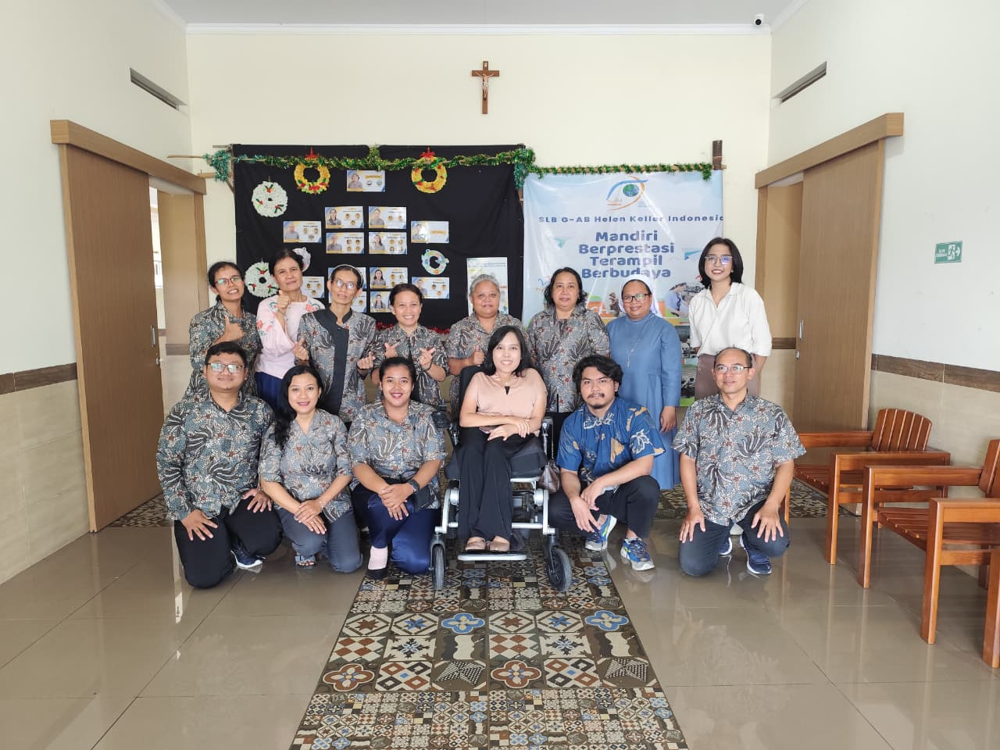

Field deployment is where technology meets reality. On March 4, 2026, the AI4DeafBlind.org team brought a Raspberry Pi-powered prototype of our bidirectional Speech–Braille device to Helen Keller Indonesia (HKI) in Yogyakarta for hands-on testing with teachers. What we discovered — about what worked, what did not, and what we had not thought to ask — reshaped our understanding of what inclusive assistive technology actually requires.
The Deployment Setup
Our field tests at Helen Keller Indonesia were conducted with a prototype powered by a Raspberry Pi 5. Peripherals included external speakers and a standard keyboard — used as a temporary substitute for a Perkins Brailler while the purpose-built tactile hardware is completed. The bidirectional system combined both of our pipelines running in tandem: Speech2Braille, converting teachers' spoken Indonesian into Braille output on a digital display, and Braille2Speech, converting student keyboard input back into spoken Indonesian for the teacher to hear.
The test conditions were deliberately close to real classroom use — no controlled laboratory environment, no ideal acoustics. The goal was to understand how the system performed where it would actually be used, and to put it in front of the people who would use it most: the educators of HKI.
About Helen Keller Indonesia
Helen Keller Indonesia (HKI) in Yogyakarta is one of Indonesia's leading institutions for DeafBlind education. Its educators bring deep expertise in tactile and multisensory teaching methods, making HKI an ideal partner for field validation of communication technology designed for DeafBlind learners.
What Worked Well
From a software and functional standpoint, the core features of the system performed exceptionally well in field conditions. Two components in particular stood out as clear strengths.
The microphone and audio processing modules proved highly effective at capturing and processing speech accurately under real classroom conditions. Teachers spoke naturally — not into a microphone, not at a reduced pace — and the system reliably captured their words for downstream processing by the Speech2Braille pipeline.
Equally significant was the performance of the noise cancellation algorithm. Classroom environments are not acoustically clean. Background sounds — movement, adjacent voices, ambient noise from outside — are a constant feature of real school settings. The noise cancellation component significantly improved audio quality, filtering ambient interference and enabling more accurate speech recognition than would otherwise be possible. For a device designed to operate in under-resourced classrooms where acoustic treatment is not feasible, this resilience is not a convenience — it is a requirement.
- Microphone & audio processing — high accuracy in real classroom conditions
- Noise cancellation algorithm — robust performance against ambient classroom noise
- End-to-end pipeline stability — both Speech2Braille and Braille2Speech ran concurrently on Raspberry Pi 5
- Teacher engagement — strong enthusiasm and active participation throughout the test
- Digital Braille display simulator — UI needs to better represent physical refreshable displays
- Physical hardware — transition from simulator to tactile interface is a top priority
- Braille grade level — Grade 2 used in testing; Grade 1 recommended for foundational teaching
- Pin configuration — prototype used 8-pin; Indonesian standard is 6-pin
- OCR enhancement — image description capability needed beyond text recognition
What Needs to Be Improved
The most significant limitation identified during the field test was the use of a digital Braille display simulator rather than a physical tactile interface. Some users found it difficult to fully visualize or experience the final form of the product through a screen-based simulation — which is, of course, not what a refreshable Braille display feels like to a user who reads by touch.
This is not a flaw in the technology itself, but a gap in the current prototype. Moving forward, we will improve the simulator's UI to more closely resemble the leading refreshable Braille displays available on the market. More fundamentally, transitioning from a digital simulator to a physical hardware interface — a physical Braille cell array that users can touch — is a top priority for the next development phase.
Priority next step: Physical tactile hardware. A DeafBlind user reads with their fingertips. No digital simulation, however accurate, replicates the experience of raised Braille cells under skin. Delivering a physical refreshable Braille interface is not an enhancement — it is the foundation the technology is being built toward.
What the Teachers Taught Us

The most valuable learning from the Yogyakarta deployment did not come from system logs or performance metrics. It came from the educators at Helen Keller Indonesia, whose suggestions revealed requirements that no amount of remote design work would have surfaced.
The teachers were enthusiastically engaged throughout the testing sessions. Only a few had prior experience with refreshable Braille displays, which made their curiosity all the more striking — they asked detailed questions about long-term capabilities, and specifically whether the device could be optimized as a primary tool for teaching Braille to students, not just as a communication aid. Their frame of reference was pedagogical from the start, and that shaped every suggestion they made.
Braille Grade Level: G2 vs. G1
During the demonstration, we used the Grade 2 (G2) Indonesian Braille table, which includes complex contracted forms — abbreviations and shorthand that experienced Braille readers use for efficiency. The teachers immediately identified the mismatch: for foundational classroom instruction, Grade 1 (G1) Braille is far more appropriate. It is simpler, cell-by-cell, and directly reflects the written alphabet — exactly what students learning Braille for the first time need to encounter. G2 contractions are a fluency tool; G1 is the learning foundation.
Pin Configuration: 8-Pin vs. 6-Pin
Our prototype used an 8-pin Braille cell configuration — a layout that supports additional characters, numbers, and formatting beyond the standard 6-dot Braille alphabet. The teachers noted, simply and clearly, that the standard in Indonesia is 6-pin Braille. The 8-pin layout was unfamiliar and, for a teacher introducing the device to students for the first time, a source of unnecessary confusion. Moving forward, we plan to address this gap through teacher training on the 8-pin layout so educators can understand its additional capabilities — while also carefully evaluating what alignment with the Indonesian 6-pin standard requires.
Enhanced OCR: Beyond Text
A suggestion that expanded our product vision: teachers asked that the system's OCR (Optical Character Recognition) and image processing features go beyond recognizing printed text to include descriptive analysis of images. In a classroom setting, a DeafBlind student's world of printed materials includes diagrams, illustrations, photographs, and charts — not just text. The ability to receive a spoken or Braille description of a visual image, not just its text content, would give students a far more complete picture of the materials they work with. This is a well-defined enhancement that leverages recent advances in vision-language AI models, and it has moved up our development roadmap as a result of this feedback.
| Feedback Area | What Teachers Said | Our Response |
|---|---|---|
| Braille Grade Level | Grade 2 (G2) is too advanced for foundational instruction; Grade 1 (G1) is the right starting point for teaching students Braille | Switching default to G1 Indonesian Braille for classroom mode In Roadmap |
| Pin Configuration | Standard in Indonesia is 6-pin Braille; the 8-pin prototype caused unfamiliarity | Teacher training program on 8-pin capabilities; evaluating 6-pin alignment In Planning |
| OCR & Image Processing | Should describe images, not just read text — students need descriptive analysis of visual materials | Integrating vision-language model for image description; added to development roadmap In Roadmap |
| Teaching Braille | Could this be a primary tool for teaching Braille to students, not just a communication aid? | Exploring a dedicated "Teaching Mode" with structured Braille instruction scaffolding Under Exploration |
"We hope this project continues to evolve until it reaches its full potential, as the dedication shown in creating tools for the deafblind community is both rare and profoundly needed."
— Ms. Florentina Peni Laras, S.Pd, Teacher, Helen Keller IndonesiaFive Lessons for Offline AI in Accessibility
Reflecting on the Yogyakarta deployment, five lessons stand out — each with implications that extend beyond this project to the broader challenge of building AI-powered assistive technology for under-resourced settings.
-
Real classrooms are the only true test environment. No amount of lab testing replicates the acoustic variability, the physical constraints, and the educational context of a real school. Getting hardware into the hands of real educators early — even in prototype form — produces feedback that cannot be obtained any other way.
-
Teachers are pedagogical experts, not just users. The feedback from HKI educators was not primarily about usability or interface preferences — it was about educational requirements. They understood the students' learning trajectories, the role of Braille grade levels in instruction, and the difference between a communication aid and a teaching tool. That expertise is irreplaceable and must be part of the design process from the beginning.
-
Hardware simulation has limits. A digital simulator can demonstrate software logic, but it cannot demonstrate what a physical refreshable Braille display feels like under a student's fingertips. For technology that is fundamentally tactile, physical hardware is not a nice-to-have — it is the core user experience.
-
Local standards are non-negotiable. The 6-pin vs. 8-pin gap illustrates a principle that applies to every localization decision: what is standard in the community you are building for must be the default. Technical advantages of non-standard approaches must be introduced through education, not assumed through design.
-
Offline resilience is a feature, not a constraint. The system's ability to run entirely on a Raspberry Pi without internet access was not a technical workaround — in the conditions of HKI's classrooms, it was the foundational requirement that made deployment possible. Building for offline is building for the actual world.
What Comes Next
The Yogyakarta deployment was a beginning, not a conclusion. The field test validated the core technology — the audio pipeline, the noise cancellation, the bidirectional architecture — while surfacing a clear set of priorities for the next development phase.
In the near term, the team will focus on three areas: completing the transition to a physical refreshable Braille display interface; updating the default Braille grade level to G1 for classroom deployments; and beginning work on image description capabilities to extend the system's usefulness beyond text-heavy materials.
Longer term, the possibility of a dedicated "Teaching Mode" — a configuration designed not just for communication but for structured Braille instruction — has emerged as a compelling direction, shaped directly by what HKI's educators asked for. Technology built by the community it serves is more likely to be used, more likely to be trusted, and more likely to make a real difference. That principle has guided every decision in this project, and it will continue to do so.
Interested in collaborating? AI4DeafBlind.org welcomes contact from researchers, educators, and organizations working in DeafBlind education worldwide — especially those interested in adapting the bidirectional pipeline for other languages and Braille standards, or in replicating the deployment in new settings. We are also preparing a submission for the World Conference on Deafblindness 2027 and welcome co-presenters and co-authors.
Summary
The field deployment at Helen Keller Indonesia confirmed that the core architecture of our bidirectional Speech–Braille system is sound: the audio processing performs reliably, the noise cancellation holds up in real classroom conditions, and the end-to-end pipeline runs stably on affordable, offline hardware. These are not small achievements.
What the deployment also confirmed is that the technology is not finished — and could not be, without this kind of direct, field-level engagement with the educators and students it is designed to serve. The feedback from HKI's teachers was specific, grounded, and actionable. It has already reshaped our roadmap. That is exactly how it should work.
Offline AI for accessibility is not a niche challenge. It is a design discipline — one that demands technical rigor, genuine partnership with affected communities, and the humility to treat every deployment as a learning opportunity. We are grateful to Helen Keller Indonesia for what they taught us, and committed to the work that remains.
About the Author

Disclosure: This article was developed with the assistance of AI tools for structural and editorial refinement. The technical concepts and final review were provided by the author.